.png)
.png)
.png)
.jpeg)
.png)
.png)
د. محمد عزت سليم
استشاري الطب النفسي والعصبي وعلاج الإدمان، متخصص في الطب النفسي للأطفال والكبار
العنوان: 12 شارع الوفاء , متفرع من شارع الميثاق, مدينة نصر
التوعية الزوجية
الحياة الزوجية رحلة طويلة مليئة بالتحديات والمتغيرات، وتحتاج إلى رعاية مستمرة حتى تزدهر وتثمر. لذلك، فإن التوعية المستمرة للزوجين بعد الزواج تعد استثمارًا حقيقيًا في بناء حياة زوجية سعيدة ومستقرة . يجب على الزوجين أن يكونا مستعدين للتعلّم والتطور بشكل مستمر، وأن يسعيا جاهدين لتحقيق أقصى استفادة من هذه الفرص.
لماذا نحتاج التوعيه؟
التكيف مع الحياة الجديدة
الحياة الزوجية تختلف عن الحياة الفردية، ويحتاج الزوجين إلى اكتساب مهارات جديدة للتكيف مع الأدوار الجديدة والمسؤوليات المشتركة
المزيدتعزيز التواصل
التواصل الفعال هو أساس أي علاقة ناجحة، والتوعية تساعد الزوجين على تطوير مهارات التواصل والاستماع الفعال
المزيدحل المشكلات
لا تخلو أي علاقة من المشكلات، والتوعية تزود الزوجين بالأدوات اللازمة لحل الخلافات والتعامل مع التحديات بطريقة بناءة
المزيدالبرامج المناسبه عن التوعيه الزوجية
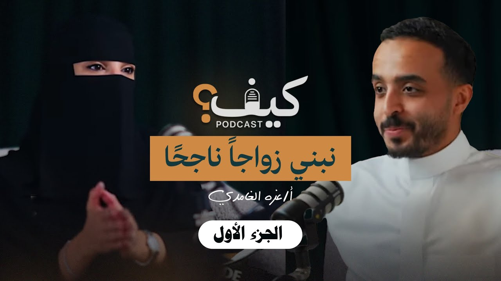
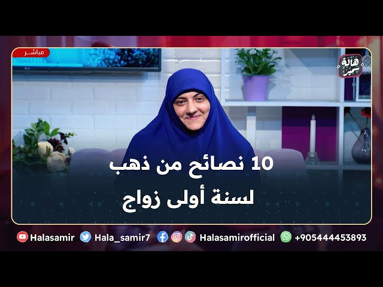
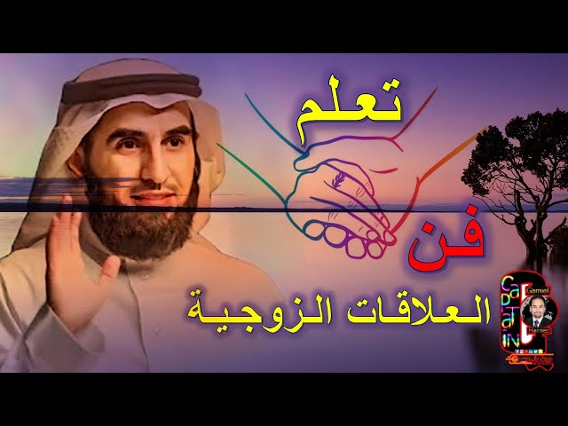
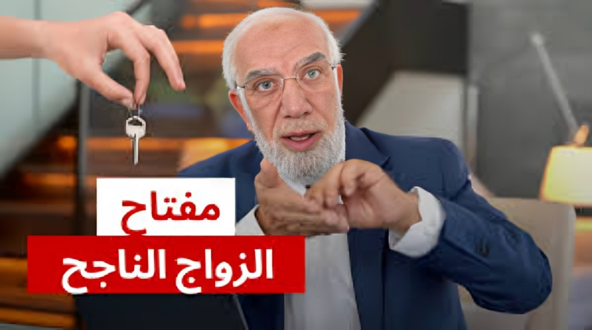
.png)
.png)
.png)
السنوات الاولى ف التربية
مشاهدة.png)
تقويم سلوك الطفل
مشاهدة.jpeg)
اخطاء قاتلة في التربية
مشاهدةتنمية قدرات الطفل
تنمية قدرات الطفل هي عملية مستمرة وهادفة تهدف إلى مساعدة الطفل على اكتشاف وإطلاق العنان لإمكاناته الكامنة، تشمل هذه العملية مجموعة واسعة من المهارات والقدرات بد ءًا من المهارات الحركية واللغوية وصولًا إلى المهارات الاجتماعية والعاطفية والتفكير النقدي والإبداعي.
اهمية تنمية قدرات الطفل
الاستقرار النفسي والعاطفي
الشريك المناسب يمنح الشعور بالأمان والراحة، مما يعزز الثقة بالنفس ويخلق بيئة مليئة بالحب والاحترام.
المزيدبناء أسرة سعيدة ومستقرة
التفاهم بين الشريكين يساعد على تربية الأبناء في بيئة متوازنة وتحقيق حياة أسرية مستقرة.
المزيدتحسين الصحة النفسية والجسدية
وجود شريك داعم يقلل التوتر والقلق، ويساعد على اتباع نمط حياة صحي ومتوازن.
المزيدالدعم في الأوقات الصعبة
الشريك الجيد يكون مصدر قوة، يساند في الأزمات ويساعد على مواجهة التحديات بثبات.
المزيدالبرامج المناسبه عن تنميه قدرات الطفل📺
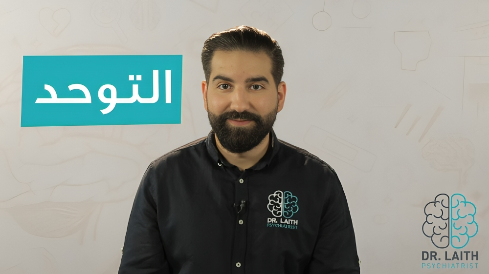
ماهو التوحد وطريقةالتعامل معه؟
مشاهدة
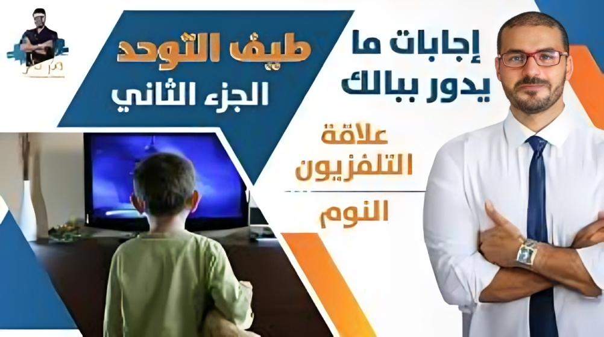
ما هو أضطراب طيف التوحد؟ وما الفرق بينه وبين التوحد الإفتراضي؟
مشاهدة
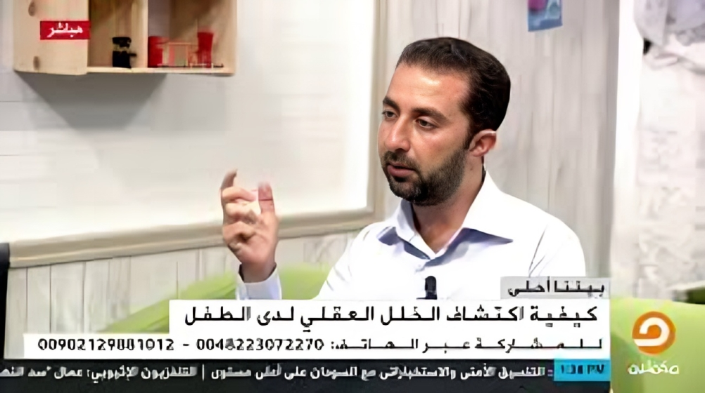
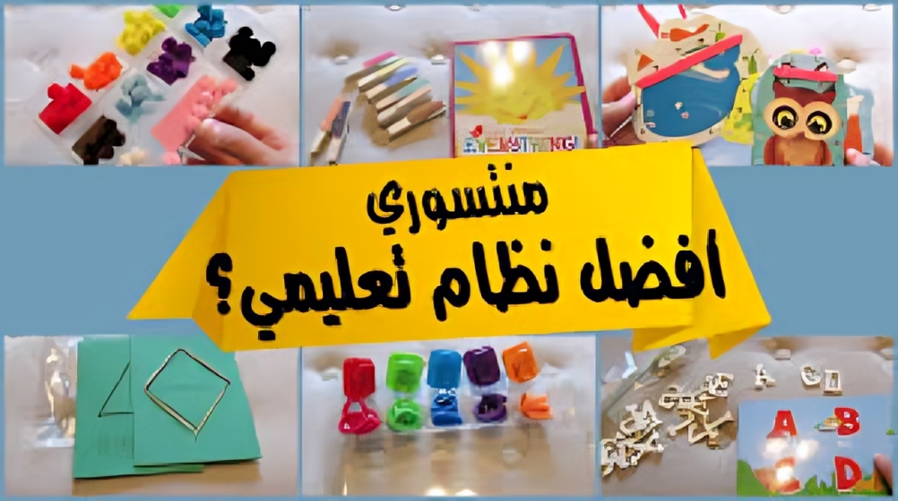
منهج منتسوري للتعليم- ما هو؟ ولماذا يختاره الجميع
مشاهدة
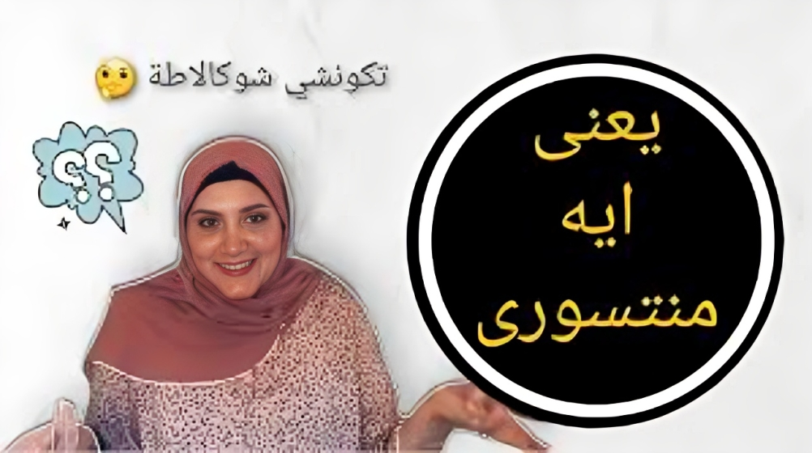
يعنى ايه #منتسورى؟!
مشاهدة
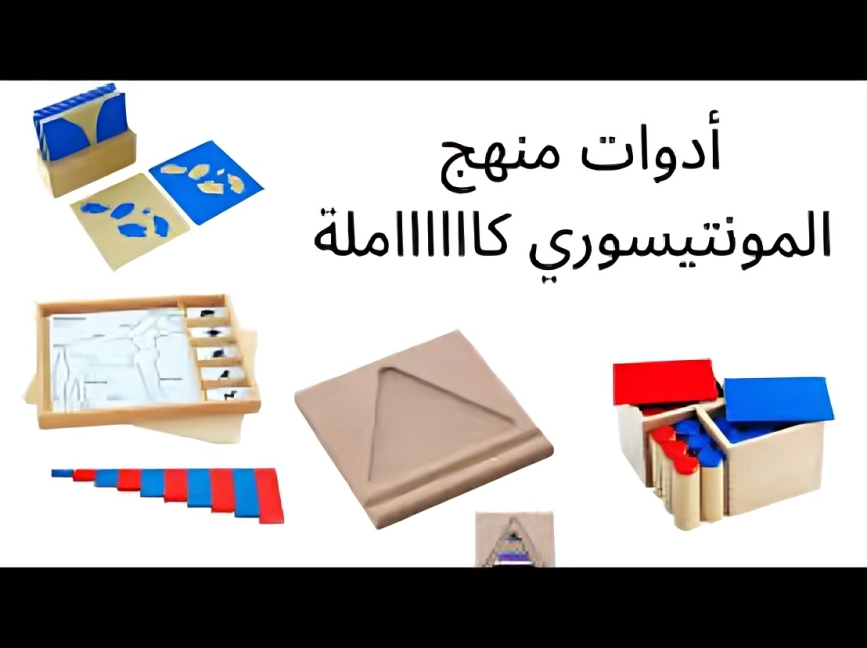
ادوات منهج المونتيسوري كامل
مشاهدة
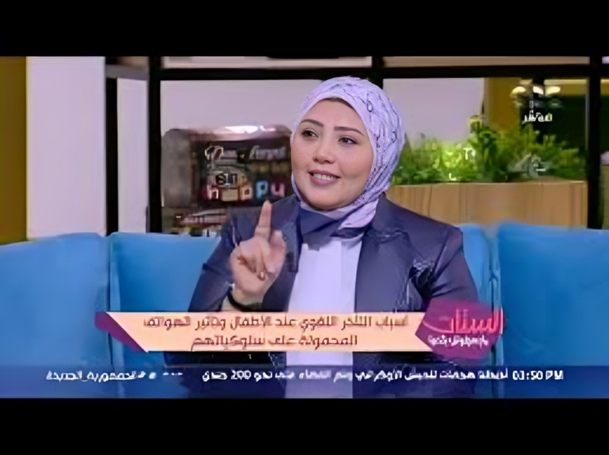
يعني إيه تأخر الكلام؟.. وإمتى تاخدي بالك إن طفلك عنده تأخر في الكلام
مشاهدةتأسيس الجانب الديني للطفل
يعد تأسيس الجانب الديني للطفل من أهم الركائز التي تساعده على بناء شخصية متوازنة وقيمية. من خلال تعليمه المبادئ الإسلامية والقيم الأخلاقية، يمكننا غرس حب الخير والتسامح في قلبه منذ الصغر.
أهمية التأسيس الديني للطفل
- غرس الإيمان في قلب الطفل من أهم أدوار الوالدين، خاصة في سنواته الأولى حيث يكون عقله وقلبه قابلين للتشكيل. قال النبي صلى الله عليه وسلم: "كلكم راعٍ وكلكم مسؤول عن رعيته"، كما أمر الله تعالى: "يَا أَيُّهَا الَّذِينَ آمَنُوا قُوا أَنفُسَكُمْ وَأَهْلِيكُمْ نَارًا" [التحريم: 6]. التربية الدينية في هذه المرحلة تحفظ الطفل وتوجّهه نحو الخير.
أساليب ترسيخ الدين لدى الطفل
- يمكن تعليم الطفل دينه بأسلوب بسيط ومحبب، مثل القصص القرآنية، والأدعية اليومية، وتشجيعه على الصلاة تدريجيًا. القدوة لها أثر كبير، فحين يرى والديه ملتزمين بالصلاة والخلق، يتعلّم بالسلوك قبل الكلام. قال رسول الله صلى الله عليه وسلم: "مروا أولادكم بالصلاة وهم أبناء سبع".
أثر التربية الدينية على الطفل
- الطفل المتربي على الدين ينشأ هادئ النفس، صادق السلوك، رحيم القلب. التربية الإيمانية تمنحه ثقة بنفسه وصلابة داخلية، لأنها تُشعره بأن الله معه. قال تعالى: "إِنَّنِي مَعَكُمَا أَسْمَعُ وَأَرَى" [طه: 46]، وهذا الإحساس يحميه من الانحراف ويزرع فيه الطمأنينة.
البرامج المناسبه عن تأسيس الجانب الديني للطفل📺
الصحة النفسية للأم
تعتبر الصحة النفسية للأم أمرًا أساسيًا للحفاظ على التوازن في الأسرة. الاهتمام بصحة الأم النفسية ينعكس إيجابيًا على علاقتها بأطفالها وعائلتها، ويضمن بيئة أسرية مستقرة وصحية.
أهمية الصحةالنفسية للأم
الارتباط العاطفي
- الأم التي تعاني من مشاكل نفسية قد تجد صعوبة في بناء علاقة قوية ومستقرة مع أطفالها
التواصل الفعال
- الصحة النفسية الجيدة تساعد الأم على التواصل بفعالية مع أطفالها والاستماع إلى احتياجاتهم
تربية إيجابية
- الأم السعيدة والمتوازنة تكون أكثر قدرة على توفير التربية الإيجابية لأطفالها، وتشجيعهم على النمو والتطور
التحديات التي تواجه الأمهات
الإجهاد والضغط
- تواجه الأمهات ضغوطًا كثيرة في حياتهن اليومية، مثل رعاية الأطفال، وإدارة المنزل، والعمل، مما قد يؤثر على صحتهن النفسية
قلة النوم
- قد تعاني الأمهات من قلة النوم بسبب رعاية الأطفال، مما يؤثر على مزاجهن وقدرتهن على التعامل مع المواقف اليومية
العزلة الاجتماعية
- قد تشعر بعض الأمهات بالعزلة الاجتماعية، خاصة إذا كن يعيشن بعيدًا عن أهلهن وأصدقائهن
التغيرات الهرمونية
- قد تؤثر التغيرات الهرمونية التي تحدث أثناء الحمل وبعد الولادة على الحالة المزاجية للأم
كيف يمكن للأم الحفاظ على صحتها النفسية؟
طلب الدعم
- لا تتردد في طلب الدعم من شريك حياتك، عائلتك، أو أصدقائك
الاهتمام بالنفس
- خصصي وقتًا لنفسك لممارسة الأنشطة التي تستمتعين بها، مثل القراءة، أو ممارسة الرياضة، أو قضاء الوقت مع الأصدقاء
الاعتناء بالصحة الجسدية
- احرصي على تناول طعام صحي وممارسة الرياضة بانتظام والحصول على قسط كاف من النوم
الاسترخاء
- تعلم تقنيات الاسترخاء مثل التأمل أو اليوجا لمساعدتك على الاسترخاء وتخفيف التوتر
البرامج المناسبه عن الصحه النفسيه للأم 📺
.png)
دورة الصحة النفسية للأم
مشاهدة
انعكاس الصحة النفسية للأم على تربية الأولاد
مشاهدة.png)
السنة الأولى للأمومة ومشاعر الأمومة واكتئاب ما بعد الولادة
مشاهدة.jpeg)
تأثير الحالة النفسية على الجنين
مشاهدة.png)
الأم الناجحة لدكتور خالد بن حمد
مشاهدةمقدمي الاستشارات
-
د/ هبة الله حبيب أخصائية الطب النفسي والإرشاد النفسي، متخصصة في الأطفال الذين يعانون من صعوبات التعلم
العنوان:24 شارع 100, كورنيش المعادي, بجوار بنزينه توتال -
د/ مصطفى شحاتة أستاذ الطب النفسي بجامعة عين شمس، متخصص في الطب النفسي للأطفال والكبار وعلاج الإدمان
العنوان:برج فهيم الطبي , ميدان حلمية الزيتون ,أمام بنك مصر -
د/ محمود الوصيفي أستاذ الطب النفسي وعلاج الإدمان، يقدم خدمات متكاملة في الطب النفسي للأطفال وتعديل السلوك والتوحد
العنوان:التجمع الخامس - هيلث كير سيتي